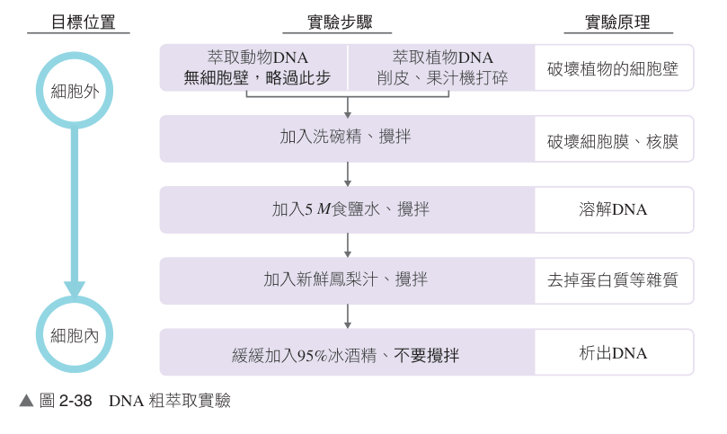

高中生物（全） 第 2 章 實驗探討活動
探討活動 2-1
探討活動 2-1 DNA 粗萃取實驗步驟與核心原理（第 1/5 頁）
探討活動 2-1 細胞中遺傳物質看得到嗎？—— DNA 粗萃取
💡 課前引導：提問與思考
1. DNA 位在細胞的何處？（真核生物主要存在於細胞核，部分存在於粒線體與葉綠體）。
2. 能否用生活中的器材和藥品讓微觀的 DNA 有機會被肉眼看見？（透過破壁、破膜、去蛋白與酒精析出凝聚）。
3. 會不會因細胞構造的差異，而有不同萃取 DNA 的實驗方法？（植物具有堅韌細胞壁需機械打破，動物則無）。
2. 能否用生活中的器材和藥品讓微觀的 DNA 有機會被肉眼看見？（透過破壁、破膜、去蛋白與酒精析出凝聚）。
3. 會不會因細胞構造的差異，而有不同萃取 DNA 的實驗方法？（植物具有堅韌細胞壁需機械打破，動物則無）。
🎯 一、實驗目的
1. 了解真核細胞中 DNA 粗萃取的基本原理與各步驟試劑功能。
2. 實際操作從植物（如洋蔥、奇異果）或動物細胞中萃取肉眼可見的 DNA 絲狀物。
2. 實際操作從植物（如洋蔥、奇異果）或動物細胞中萃取肉眼可見的 DNA 絲狀物。
🔬 二、實驗流程圖解與各步驟生化原理對照

▲ 圖 2-38 DNA 粗萃取實驗步驟與各目標位置破壞原理（點擊圖片可放大檢視）
1. 破壞細胞壁：萃取植物 DNA 需削皮並以 果汁機打碎；動物細胞無細胞壁則略過。
2. 破壞細胞膜與核膜：加入 洗碗精（介面活性劑能溶解雙層磷脂質與蛋白質膜）。
3. 溶解 DNA：加入 5 M 高濃度食鹽水，使 DNA 充分溶解於水溶液中。
4. 分解蛋白質雜質：加入 新鮮鳳梨汁（富含鳳梨蛋白酶，水解染色質中結合的組蛋白）。
5. 析出白色絲狀 DNA：沿杯壁緩緩加入 95% 冰酒精，切勿攪拌，於交界面析出 DNA。
2. 破壞細胞膜與核膜：加入 洗碗精（介面活性劑能溶解雙層磷脂質與蛋白質膜）。
3. 溶解 DNA：加入 5 M 高濃度食鹽水，使 DNA 充分溶解於水溶液中。
4. 分解蛋白質雜質：加入 新鮮鳳梨汁（富含鳳梨蛋白酶，水解染色質中結合的組蛋白）。
5. 析出白色絲狀 DNA：沿杯壁緩緩加入 95% 冰酒精，切勿攪拌，於交界面析出 DNA。
📚 延伸補充：何謂「粗萃取（Crude Extraction）」？
真核細胞染色質由 DNA 和蛋白質緊密結合而成，細胞質中亦含有脂質與多醣等雜質。本實驗所用的生活化藥劑無法 100% 去除所有的非核酸成分，最終析出的白色絲狀物為「大量 DNA 與部分胞內物質的黏稠混合物」，故稱為「粗萃取」。